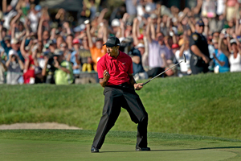

Tiger Woods
Top 3 Moments

-
2005 Masters Chip-In on 16
- Tiger sank a stunning par-saving chip on the 16th hole at Augusta.
- This moment instantly became one of his most unforgettable Masters highlights.
-
2000 U.S. Open at Pebble Beach
- He dominated the famously difficult course and won by a record 15 strokes.
- This victory cemented Tiger's status as the best player in golf.
-
2019 Masters Comeback
- Tiger returned from injury to win his fifth green jacket in dramatic fashion.
- The comeback is celebrated as one of golf's greatest and most emotional stories.
2005 Masters Chip-In on 16
2000 U.S. Open at Pebble Beach
2019 Masters Comeback
[ Insert Video Here ]